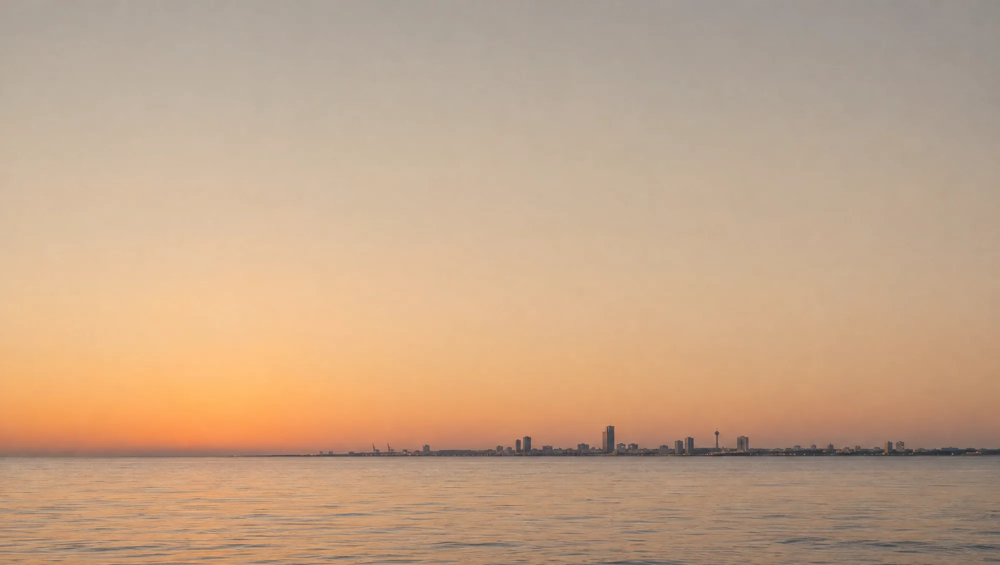

Building Delivery Units That Outlast an Election Cycle
What keeps a central delivery unit effective when leadership changes.

Shaping Africa’s Future. Connecting Global Opportunity.
Dawn · Atlantic coast · 05:58
Silver Fox Horizons is an international strategic advisory firm partnering with governments, institutions and businesses to strengthen state capacity, elevate global influence and unlock investment opportunities across Africa.
We work alongside the people shaping Africa’s next chapter.
We bring policy, communications and commercial experience together, so that reform, reputation and investment move in the same direction.

Helping governments strengthen institutional capacity, design and implement reforms, and improve public-sector performance.
Seat of government · 17:42

Supporting governments in strengthening their international reputation, soft power and global visibility.
East African capital · Blue hour · 18:51

Helping international companies and investors navigate African markets, engage with governments and develop strategic investment and commercial partnerships.
Deep-water port · Dusk · 18:20
Map: the outline of Africa resting on the horizon, with lines rising towards London, New York and Dubai.
We start with the context: the institutions, the people and what has already been tried.
We agree clear priorities and a realistic plan to reach them.
We work alongside your teams and bring in the right partners.
We stay through implementation and measure what changes.
What keeps a central delivery unit effective when leadership changes.
Practical lessons for companies entering markets where the state is a key partner.
Why a country’s global image is built by its institutions, not its slogans.
Tell us what you are working on. We will tell you honestly how we can help.
Contact Us